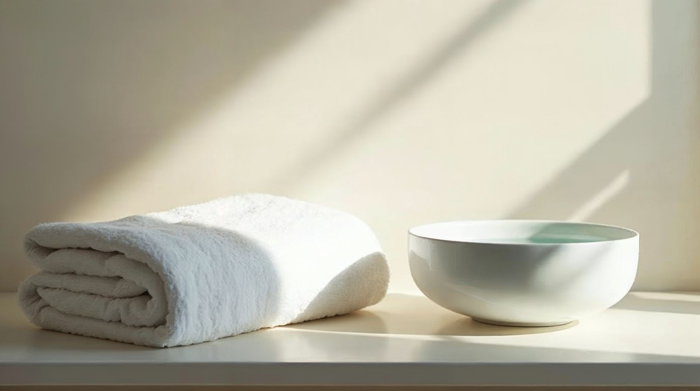
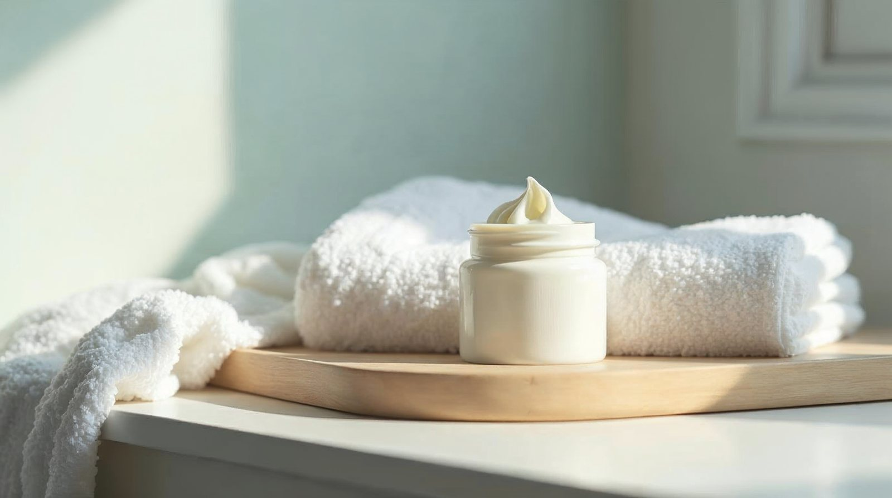
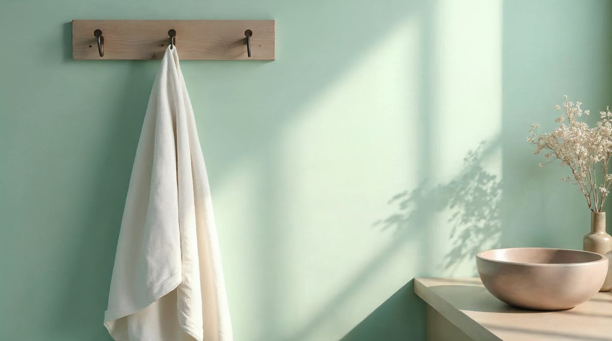
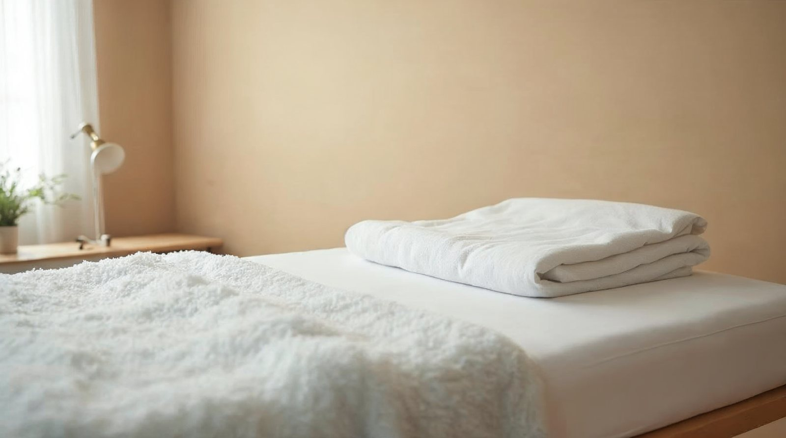
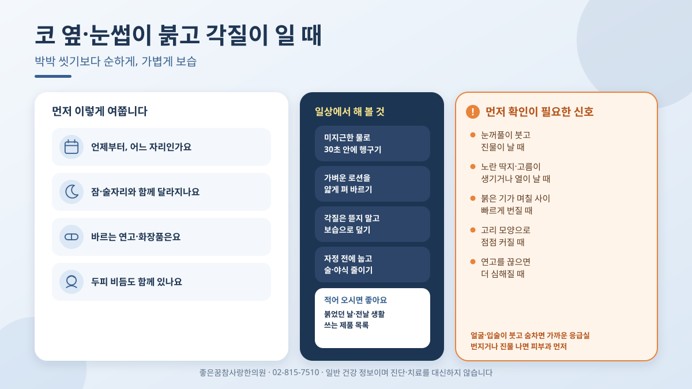

이종호 한의사 감수좋은꿈참사랑한의원 대표원장 (한의사 면허번호 19769)발행 2026-11-26 · 수정 2026-11-26
이 글의 차례
출근 준비로 바쁜 아침, 세수를 하고 거울을 봅니다. 콧방울 옆 주름이 빨갛고, 그 위로 하얀 각질이 가루처럼 일어나 있습니다. 눈썹 사이를 손끝으로 문지르니 비듬 같은 것이 후드득 떨어집니다. 파운데이션을 발라 보지만 코 옆에서만 하얗게 들뜨고, 점심때쯤 마스크를 벗으면 그 자리가 더 붉어 보입니다.
거슬려서 손톱으로 살살 떼어 내면 그날 저녁엔 그 자리가 화끈거립니다.
진료실에서 이런 말씀을 자주 듣습니다. "아침에 깨끗이 씻었는데 오후면 또 일어나요." "건조해서 그런가 싶어 크림을 듬뿍 발랐더니 더 빨개졌어요." 매일 아침 거울에서 가장 먼저 눈에 들어오는 자리라 별일 아니라고 넘기기 어렵습니다. 사람을 만날 때마다 코 옆이 신경 쓰여 손이 자꾸 얼굴로 가는 그 마음, 충분히 짐작이 갑니다.
이렇게 코 옆 주름과 눈썹, 미간, 이마와 머리카락 경계처럼 기름이 많이 나오는 자리가 붉어지고 각질이 반복해서 일어난다면, 얼굴에 생긴 지루피부염일 가능성을 먼저 생각해 봅니다. 지루피부염은 옮지 않고, 깨끗하지 않아서 생기는 것도 아닙니다. 오히려 박박 씻고, 기름진 크림을 두껍게 바르고, 각질을 뜯어내면 더 오래 갑니다.
그래서 저는 순하게 씻고, 가볍게 보습하고, 잠과 술, 기름진 야식부터 살펴보시라고 말씀드립니다. 붉은 기가 넓게 번지거나 진물이 날 때는 피부과 진료를 먼저 받으셔야 합니다.
왜 하필 코 옆과 눈썹일까요
얼굴에서도 코 옆 주름, 눈썹, 미간, 이마 위쪽은 피지샘이 특히 많은 자리입니다. 두피와 귀 뒤, 앞가슴도 마찬가지입니다. 우리 피부에는 기름을 좋아하는 효모균이 늘 조금씩 살고 있는데, 이 균이 피지를 분해하면서 생기는 물질이 피부를 자극하면 붉어지고 각질이 일어난다는 설명이 널리 알려져 있습니다.
그래서 지루피부염은 기름이 많은 자리를 따라 생기고, 두피 비듬과 함께 오는 경우가 많습니다. 남성에게 조금 더 흔하다고도 합니다.
겨울에 심해지는 데에는 이유가 있습니다. 바깥의 찬 공기와 난방으로 마른 실내 공기를 오가면서 피부 장벽이 약해지고, 하루 종일 쓰는 마스크와 목도리가 코와 볼을 문지릅니다. 기름은 그대로 나오는데 겉은 마르니, 번들거리면서도 각질이 일어나는 묘한 상태가 됩니다. 연말에는 잠이 모자라고, 긴장할 일이 많고, 술과 기름진 음식이 잦아집니다.
이런 것들이 겹칠 때 지루피부염이 도드라진다는 이야기가 많습니다.
한의학에서는 이런 피부를 습한 열이 위로 몰려 얼굴에 맺힌 모습으로 보곤 합니다. 기름진 음식과 술로 위장에 열이 쌓이고, 잠이 모자라 몸을 적셔 주던 진액이 마르면, 겉은 건조한데 속은 열이 오르는 상태가 된다는 것이지요. 그래서 저는 피부만 보지 않고 소화와 잠, 마음의 긴장을 함께 여쭙습니다.
비슷해 보이지만 다른 피부 문제도 있습니다. 볼과 코 가운데가 넓게 붉고 화끈거리며 실핏줄이 비치거나 뾰루지가 섞인다면 주사라는 다른 피부염일 수 있습니다. 경계가 또렷한 고리 모양으로 점점 커진다면 곰팡이 감염일 수 있는데, 이때 스테로이드 연고를 바르면 오히려 번질 수 있습니다.
새로 바꾼 화장품이나 세안제를 쓴 자리 모양 그대로 붉어졌다면 접촉피부염을 생각합니다. 각질이 두껍고 은빛으로 쌓이며 팔꿈치와 무릎에도 비슷한 것이 있다면 건선일 수 있습니다. 이런 구분은 직접 보아야 할 때가 많아, 헷갈리면 피부과에서 먼저 확인받으시라고 권합니다.

이런 분들을 자주 뵙습니다
이런 분들이 많습니다. 노량진에서 시험을 준비하는 수험생입니다. 독서실 히터 바람을 하루 종일 맞고, 마스크를 열 시간 넘게 쓰고, 시험이 다가오면 잠이 줄고 편의점 야식이 늘어납니다. 미간과 코 옆이 붉어진 걸 거울로 볼 때마다 신경이 쓰여 공부에도 집중이 안 된다고 하십니다.
이런 분께는 잠드는 시각을 30분이라도 당기는 것과, 마스크를 하루 한 번은 새것으로 바꾸는 것부터 같이 정합니다.
연말 마감과 송년회가 이어지는 직장인도 자주 뵙습니다. 남성분들은 콧수염 자리와 눈썹이 먼저 붉어지고, 면도한 뒤 따갑다고 하십니다. 회식 다음 날 아침이면 더 빨갛다고도 하시지요. 술을 마신 날과 아닌 날, 잠을 잔 시간과 붉은 정도를 일주일만 적어 보자고 말씀드리면, 생각보다 뚜렷한 흐름이 보이기도 합니다.
화장을 하는 분들은 코 옆에서 파운데이션이 들뜨는 게 싫어 각질 제거제나 스크럽을 자주 쓰다가 오히려 더 붉어져 오십니다. 각질을 없애려는 노력이 피부 장벽을 더 얇게 만든 경우입니다. 이런 분께는 각질 제거를 몇 주 쉬고, 화장을 얇게 하는 방법을 함께 찾아봅니다.

아침과 밤, 이렇게 바꿔 봅니다
아침 세안은 미지근한 물로 합니다. 뜨거운 물은 개운하지만 피부 기름을 한꺼번에 걷어 내 오후에 더 당기게 합니다. 순한 세안제를 손바닥에서 충분히 거품 낸 뒤 얼굴에 얹듯이 펴 바르고, 코 옆과 미간은 손끝으로 부드럽게 굴리듯 씻은 다음 30초 안에 헹굽니다. 수건은 문지르지 말고 꾹꾹 눌러 물기만 닦으세요.
스크럽이나 각질 제거 패드, 필링 제품은 붉은 기가 가라앉을 때까지 쉬는 편을 권합니다.
보습은 세안하고 3분 안에 합니다. 기름이 많은 자리라도 겉이 말라 있으면 각질이 더 일어나니 보습을 건너뛰지는 않습니다. 다만 코 옆과 미간에는 무거운 오일이나 두꺼운 크림을 듬뿍 바르기보다, 가벼운 로션이나 젤을 얇게 펴 바르는 쪽이 편한 분이 많습니다. 볼처럼 건조한 자리에는 조금 더 촉촉한 제품을 따로 바르셔도 됩니다.
일어난 각질은 손톱으로 떼지 마세요. 뜯어낸 자리는 피부가 더 얇아져 붉은 기가 오래 남습니다. 각질이 두껍게 일어났다면 세안 뒤 피부가 촉촉하게 부드러워졌을 때 보습제로 덮어 두면, 며칠에 걸쳐 저절로 떨어지는 경우가 많습니다.
두피에 비듬이 함께 있다면 두피도 같이 돌봐야 합니다. 머리를 감을 때 샴푸 거품이 이마와 눈썹으로 흘러내리면 꼼꼼히 헹구고, 두피는 손톱이 아니라 손끝으로 문지릅니다. 약국에서 파는 항진균 성분 샴푸를 쓸지는 피부과나 약사와 상의해 정하세요. 베갯잇은 일주일에 두어 번 갈고, 안경을 쓰신다면 코받침을 매일 한 번 닦아 줍니다.
마스크는 하루 한 번 이상 새것으로 바꾸고, 젖거나 기름이 배면 바로 바꿉니다.
눈썹 가까이가 심한 분은 속눈썹 뿌리 쪽도 한번 살펴보세요. 눈꺼풀 가장자리에 비듬 같은 각질이 붙고 눈이 가렵거나 뻑뻑하다면 같은 흐름이 눈꺼풀까지 이어진 경우일 수 있습니다. 이때는 따뜻한 수건을 감은 눈 위에 5분쯤 얹었다가 깨끗한 면봉으로 속눈썹 뿌리를 살살 닦아 내는 방법을 많이 씁니다. 눈이 빨갛게 충혈되거나 아프면 안과 진료를 먼저 받으세요.
면도하는 분은 날이 무딘 면도기로 여러 번 긁지 말고, 면도 전에 미지근한 물로 수염을 충분히 불린 다음 결대로 한 번에 밀어 주세요. 화장하는 분은 붉은 날 두껍게 덮을수록 저녁에 지울 때 더 문지르게 되니, 그런 날은 가볍게 마무리하고 순한 클렌징으로 지웁니다.
생활 쪽에서는 잠이 먼저입니다. 가능하면 자정 전에 눕고, 시험이나 마감 때문에 늦게 자더라도 일어나는 시각은 크게 흔들리지 않게 해 보세요. 술과 기름진 야식, 단 음식은 붉은 기가 가라앉을 때까지 줄이고, 매운 국물을 먹고 얼굴이 화끈 달아오르는 분은 그것도 조금 쉬어 봅니다.
히터 바람이 얼굴에 바로 닿지 않도록 자리를 옮기고, 방 안 습도도 너무 마르지 않게 챙기세요.
의외로 손버릇이 붉은 기를 오래 끌고 가는 경우도 많습니다. 공부하다가, 회의하다가, 휴대폰을 보다가 자기도 모르게 코 옆을 만지고 각질을 긁어내지요. 손톱을 짧게 깎아 두고, 손이 얼굴로 가려 할 때 그 손으로 보습제를 한 번 톡톡 두드려 주는 것으로 버릇을 바꿔 보세요.
책상 앞 거울을 잠시 치워 두는 것만으로 만지는 횟수가 줄었다고 말씀하시는 분도 계십니다.
연고는 처방받은 대로만 쓰셔야 합니다. 스테로이드 연고는 붉은 기를 빨리 가라앉히는 데 쓰이지만, 얼굴에 오래 바르면 피부가 얇아지고 실핏줄이 비치거나 붉은 기가 오히려 오래 남을 수 있다고 알려져 있습니다. 가족이 쓰던 연고를 얼굴에 바르는 일은 피해 주세요.

자주 하시는 오해
깨끗이 씻지 않아서 생긴다고 생각해 하루에 서너 번씩 세수하시는 분이 있습니다. 하지만 씻을수록 피부 장벽이 약해져 오히려 더 붉어지기 쉽습니다. 아침과 저녁 두 번이면 충분합니다. 건조해서 생긴 것이니 기름진 크림을 듬뿍 발라야 한다는 생각도 흔한데, 기름이 많은 자리에 두꺼운 크림을 바르면 번들거리면서 붉은 기가 오래 가기도 합니다.
옮을까 봐 수건이나 베개를 따로 쓰시는 분도 계시지만, 지루피부염은 사람에게서 사람으로 옮는 병이 아닙니다.
한 번 가라앉으면 끝이라고 여기기도 쉽습니다. 그런데 잠이 모자라거나 계절이 바뀔 때 다시 올라오는 경향이 있어, 실망하시는 분이 많습니다. 다시 붉어졌다고 그동안의 노력이 헛된 것은 아닙니다. 내 몸에서 먼저 오는 신호를 알아 두면 그때그때 일찍 손을 쓸 수 있습니다.
얼마나 지켜보고, 언제 진료를 받을까요
세안과 보습, 잠과 음식을 바꿔 보신 뒤 2~3주 정도 지켜보세요. 일주일에 한 번 같은 조명에서 사진을 남기면 변화를 보기 쉽습니다. 그래도 붉은 기와 각질이 그대로이거나, 가려워서 잠을 설치거나, 가라앉았다가도 자꾸 되풀이된다면 상담을 받아 보시길 권합니다.
다음과 같은 경우에는 기다리지 말고 먼저 해당 진료를 받으세요.
- 눈꺼풀이 붓고 진물이 나거나, 눈이 충혈되고 아픈 경우
- 노란 딱지가 앉고 진물이나 고름이 나거나, 열이 나는 경우
- 붉은 기가 며칠 사이 얼굴 전체나 목, 몸으로 빠르게 번지는 경우
- 경계가 또렷한 고리 모양으로 점점 커지는 경우
- 뺨과 콧등에 나비 모양으로 붉어지면서 관절이 아프고 열이나 심한 피로가 함께 있는 경우
- 연고를 바를 때만 가라앉고 끊으면 더 심해지기를 되풀이하는 경우
얼굴이 갑자기 붓고 입술이나 혀가 부으며 숨쉬기 답답하다면 알레르기 반응일 수 있으니 지체하지 말고 가까운 응급실로 가세요. 처방받은 연고나 약은 의사와 상의 없이 늘리거나 끊지 않습니다.

좋은꿈참사랑한의원에 처음 오시면
처음 오시면 저는 언제부터 어느 자리가 붉어졌는지, 계절이나 잠, 술자리와 함께 달라지는지부터 여쭙습니다. 쓰고 계신 세안제와 화장품, 연고의 이름과 바른 기간, 두피 비듬이 있는지, 피부과 진료를 받으셨는지도 차례로 확인합니다.
그다음 양손을 올려 봐 달라고 말씀드리고 맥을 짚습니다. 맥을 짚는 동안 식사와 소화, 대변, 잠, 몸이 더운 편인지 찬 편인지를 여쭙고, 혀와 배를 살핍니다. 피부는 붉은 기의 경계와 각질의 색, 진물이 있는지를 직접 보고, 두피와 귀 뒤, 앞가슴에도 비슷한 것이 있는지 함께 봅니다.
그렇게 모은 이야기로 침이나 한약 상담처럼 지금 상태에 맞는 방법을 함께 정하고, 피부과 치료를 받고 계시다면 서로 엇갈리지 않게 조율합니다. 비용과 건강보험 적용은 방문 전 전화로 확인해 주세요. 진료실을 나서기 전에는 집에서 바꿔 볼 한 가지를 정해 드리고, 다시 오시면 지난번 붉었던 자리와 그사이 잠, 야식, 술자리가 어땠는지부터 이어서 여쭙습니다.
오실 때 붉은 기가 심했던 날짜와 그 전날의 잠, 술, 야식, 긴장된 일을 한 줄씩 적고, 일주일 간격으로 찍은 사진과 쓰고 계신 제품 목록을 가져오시면 이야기가 훨씬 빨라집니다.
마치며
얼굴은 매일 아침 거울에서 가장 먼저 마주하는 자리라, 작은 붉은 기도 마음을 오래 붙잡습니다. 그 마음을 알기에 저는 피부만 들여다보지 않고, 그 피부를 만든 하루의 리듬을 함께 보려고 합니다. 박박 씻고 뜯어내던 손을 조금 내려놓고, 대신 잠과 식사를 챙겨 보세요.
다음에 저를 만나시면, 지난 한 주 가운데 코 옆이 가장 붉었던 날 그 전날 무엇을 하셨는지부터 여쭙겠습니다.
함께 읽으면 좋은 글
- 두피에 비듬이 많고 가렵고 붉을 때는 어떻게 살피나요?
- 귀 뒤나 귓바퀴가 건조하고 각질이 일어날 때는 어떻게 살피나요?
- 세안할 때 순서와 물 온도를 어떻게 하면 얼굴이 덜 당기나요?
- 잠이 부족하면 피부가 푸석하고 트러블이 나는 이유는 무엇인가요?

왜 하필 코 옆과 눈썹일까요
- 얼굴에서도 코 옆 주름, 눈썹, 미간, 이마 위쪽은 피지샘이 특히 많은 자리입니다.
- 두피와 귀 뒤, 앞가슴도 마찬가지입니다.
이런 분들을 자주 뵙습니다
- 이런 분들이 많습니다.
- 노량진에서 시험을 준비하는 수험생입니다.
아침과 밤, 이렇게 바꿔 봅니다
- 아침 세안은 미지근한 물로 합니다.
- 뜨거운 물은 개운하지만 피부 기름을 한꺼번에 걷어 내 오후에 더 당기게 합니다.
자주 하시는 오해
- 깨끗이 씻지 않아서 생긴다고 생각해 하루에 서너 번씩 세수하시는 분이 있습니다.
- 하지만 씻을수록 피부 장벽이 약해져 오히려 더 붉어지기 쉽습니다.
자주 묻는 질문
지루피부염은 다른 사람에게 옮나요?
옮지 않습니다. 기름이 많은 자리에 사는 효모균과 피부 장벽, 잠과 스트레스 같은 몸의 상태가 함께 얽혀 생기는 피부염으로 알려져 있어, 수건이나 베개를 따로 쓸 필요는 없습니다.
기름진 자리인데 보습제를 발라도 되나요?
겉이 말라 각질이 일어나는 경우가 많아 보습은 하시는 편이 좋습니다. 다만 코 옆과 미간에는 무거운 크림보다 가벼운 로션이나 젤을 얇게 펴 바르는 쪽이 편한 분이 많습니다.
스테로이드 연고를 계속 발라도 괜찮을까요?
처방받은 기간과 방법대로만 쓰셔야 합니다. 얼굴에 오래 바르면 피부가 얇아지거나 붉은 기가 오래 남을 수 있어, 연고를 끊으면 다시 심해지기를 되풀이한다면 처방한 의사와 다시 상의하세요.
비듬 샴푸로 얼굴을 씻어도 되나요?
항진균 성분 샴푸를 얼굴에 잠깐 쓰도록 안내하는 경우도 있지만, 자극이 될 수 있어 스스로 정하기보다 피부과나 약사에게 먼저 물어보세요.
술 마신 다음 날 더 빨개지는 것 같아요.
술은 얼굴 혈관을 넓히고 잠을 얕게 해 붉은 기를 더 도드라지게 할 수 있습니다. 붉은 기가 가라앉을 때까지는 술자리를 줄이고, 마신 날과 붉은 정도를 함께 적어 보시면 흐름을 알기 쉽습니다.
좋은꿈참사랑한의원은 재진 때 지난번 이야기부터 이어서 여쭙니다. 진료시간과 예약은 오시는 길에서 확인하세요.
어디서 상담받을 수 있나요?
좋은꿈참사랑한의원은 서울 동작구 만양로2길 2 신성빌딩 3층·5층(서울 동작구 상도동, 7호선 상도역 3번 출구 근처)에 있습니다. 한의사 3명(이종호 대표원장, 조영기 수석진료원장, 정원영 진료원장)이 진료합니다. 진료시간은 평일 09:30~20:00(점심 13:00~14:00), 토·일·공휴일 09:30~15:00이며, 방문 전 전화로 확인을 권합니다. 예약은 네이버 예약, 카카오톡 상담, 전화 02-815-7510로 받습니다.
이 글은 일반적인 건강 정보이며 개인의 진단이나 치료를 대신하지 않습니다. 증상이 있거나 복용 중인 약이 있다면 진료를 통해 확인하세요. 치료 효과는 개인마다 다를 수 있습니다.
작성 기준: 일반적으로 알려져 있는 건강 정보를 참고해 정리했습니다(대표원장 감수). 증상 기록은 1~2주 동안 하루 1회, 비슷한 시간에 적어 오시면 지난 상태와 비교하기 쉽습니다.